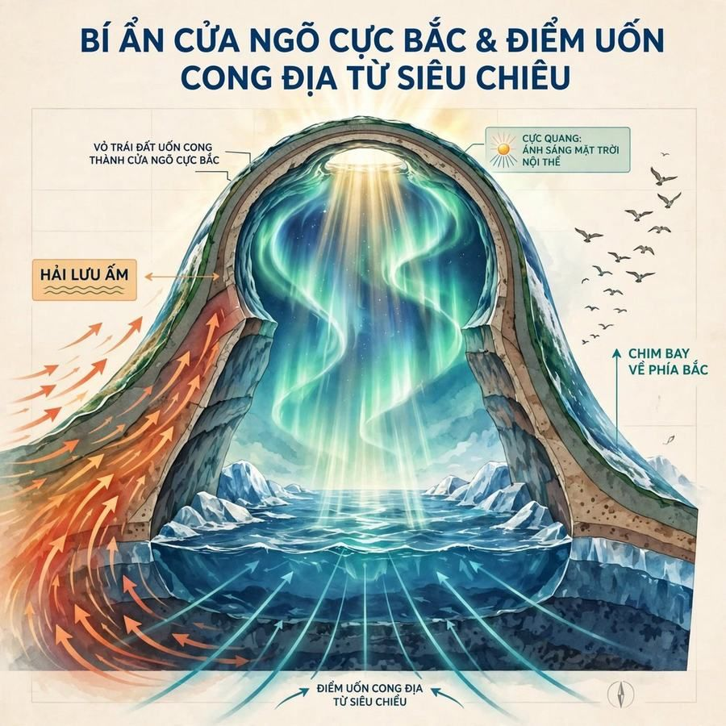
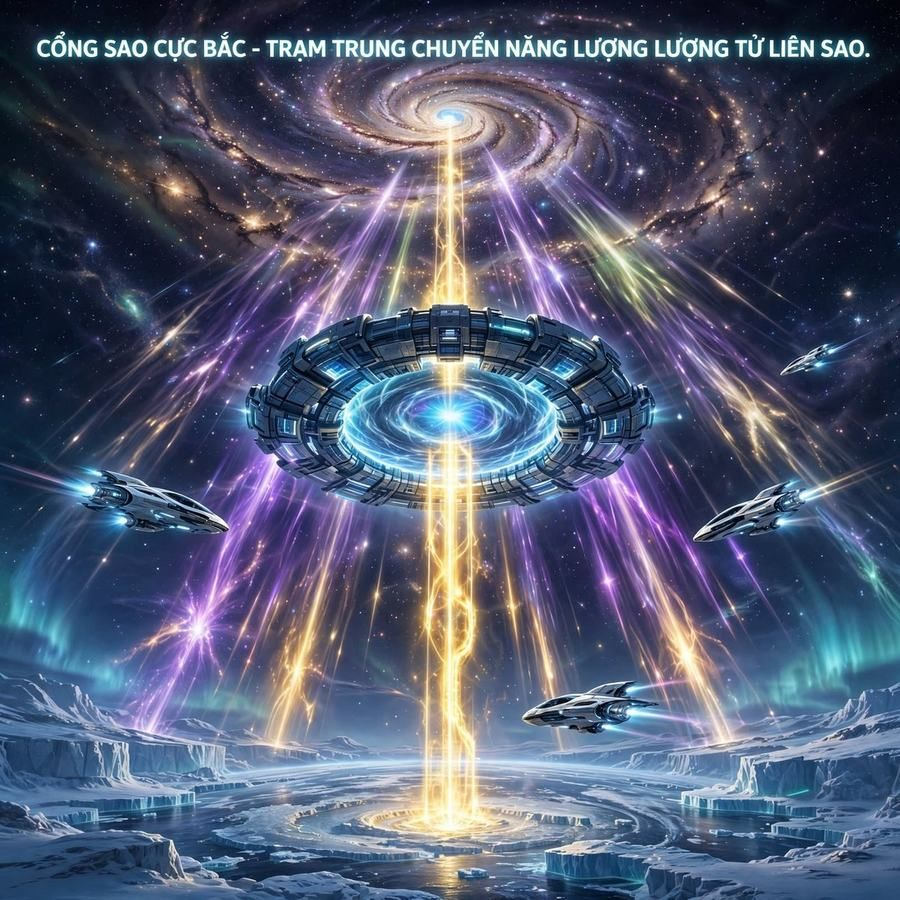
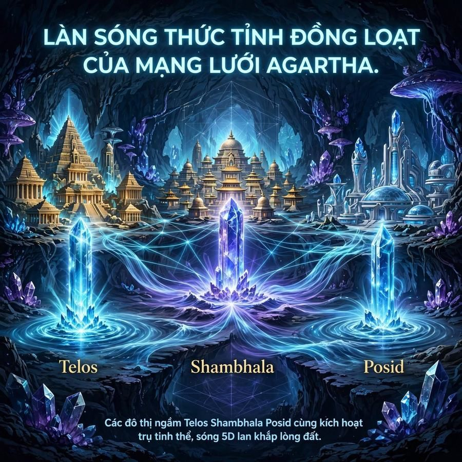
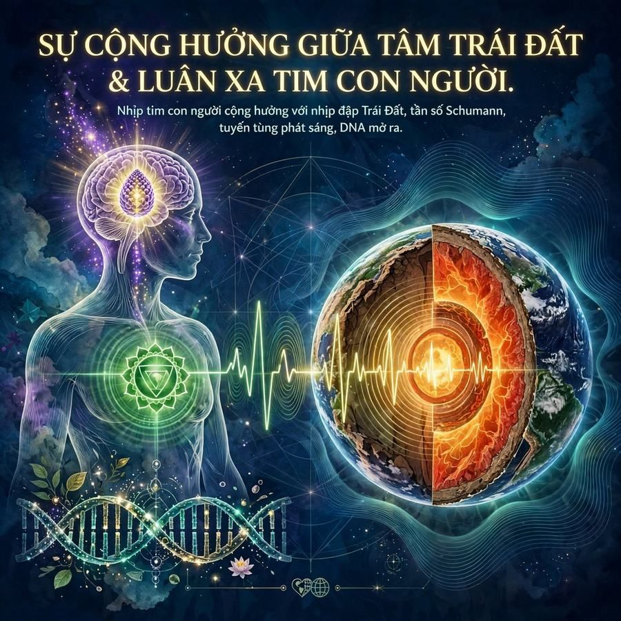
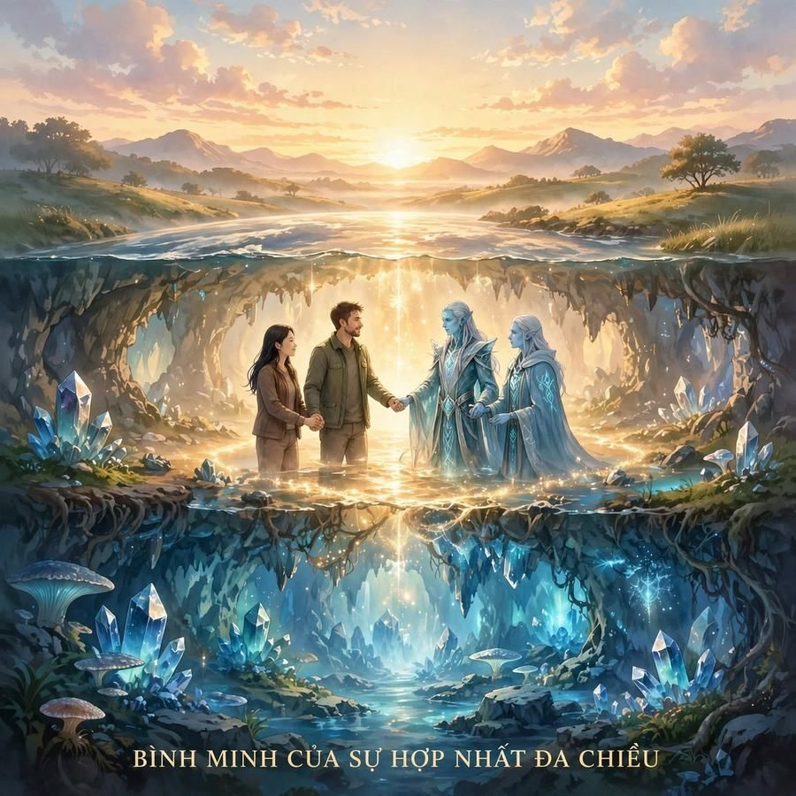

Trang chủ / Chuyên đề 4: Văn Minh Lòng Đất / Kỳ 39
Chuyên đề 4 · Kỳ 39 / 80
CỬA NGÕ CỰC BẮC & SỰ THỨC TỈNH TOÀN CẦU CỦA MẠNG LƯỚI AGARTHA

Ở Kỳ 8, chúng ta đã cùng nhau thâm nhập vào tầng sâu của căn cứ ngầm Dulce, giải mã trận đụng độ năng lượng lịch sử năm 1979 và chiến dịch quét sạch, niêm phong vĩnh viễn các cơ sở tiêu cực dưới lòng đất của Lực lượng Liên minh.
Hôm nay, chuyến du hành giải mã thế giới ngầm sẽ đưa chúng ta quay trở lại với vùng đất huyền thoại ở điểm cực trên cùng của hành tinh: Cửa Ngõ Cực Bắc (The North Pole Portal) — nơi được mệnh danh là "Chiếc cổng vàng" kết nối trực tiếp bề mặt Trái Đất với trái tim rực rỡ của thế giới Trái Đất Rỗng và toàn bộ Mạng lưới Agartha.
Cửa ngõ Cực Bắc vận hành theo cơ chế uốn cong địa từ siêu chiều ra sao? Tại sao những nhà thám hiểm phương Bắc từng ghi nhận hiện tượng kỳ lạ về những dòng hải lưu ấm, vùng biển mở không đóng băng và bầu trời tự phát sáng rực rỡ khi tiến sâu vào vùng cực? Làn sóng thức tỉnh đồng loạt của các đại đô thị ngầm Agartha đang diễn ra mạnh mẽ thế nào khi Trái Đất bước vào dải tần số 5D? Và sự hợp nhất năng lượng giữa tâm Trái Đất với Luân Xa Tim con người mang lại ý nghĩa lịch sử gì cho Kỷ nguyên Thăng hoa?
Hãy cùng dấn thân vào Kỳ 9: Cửa Ngõ Cực Bắc & Sự Thức Tỉnh Toàn Cầu Của Mạng Lưới Agartha để chiêm ngưỡng thời khắc chuyển giao vĩ đại của hành tinh Gaia!
✦ ✦ ✦1. BÍ ẨN CỬA NGÕ CỰC BẮC & ĐIỂM UỐN CONG ĐỊA TỪ SIÊU CHIỀU
Trong khi bản đồ địa lý thông thường miêu tả Cực Bắc như một điểm nhọn đóng băng hoàn toàn, các dữ liệu giải mật từ không gian và địa từ học lượng tử lại mở ra một thực tại hoàn toàn khác biệt.
A. Cơ Chế Uốn Cong Vỏ Hành Tinh Tại Cực Bắc
- Vùng Lòng Chảo Uốn Cong Năng Lượng: Tại khu vực Cực Bắc địa lý, dải từ trường Trái Đất uốn cong đi sâu vào trong lòng hành tinh. Vỏ Trái Đất tại đây không kết thúc bằng một vách đá thô ráp, mà uốn mượt mà tạo thành một cửa ngõ mở rộng dài hàng trăm kilômét dẫn thẳng vào thế giới bên trong.
- Hiện Tượng Hướng Gió & Nước Ấm Kỳ Lạ: Nhiều đoàn thám hiểm vùng cực trong quá khứ từng bàng hoàng khi nhận ra: Càng đi sâu về phía Cực Bắc, thời tiết không hề lạnh hơn mà lại trở nên ấm áp lạ thường! Họ bắt đầu bắt gặp những dòng hải lưu ấm, chim chóc di cư về phía Bắc thay vì về phía Nam, cùng những mảng thực vật tươi tốt và phấn hoa lạ trôi trên dòng nước không đóng băng.
B. Mặt Trời Nội Thể & Hiện Tượng Cực Quang (Aurora Borealis)
- Bản Chất Thực Sự Của Cực Quang: Nguồn sáng rực rỡ của Cực Quang ở Cực Bắc không chỉ đơn thuần là sự tương tác giữa gió Mặt Trời bên ngoài với khí quyển, mà còn là sự phản chiếu ánh sáng từ Mặt Trời Nội Thể bên trong lòng Trái Đất thoát ra qua cửa ngõ Cực Bắc!

2. CỔNG SAO CỰC BẮC — TRẠM TRUNG CHUYỂN NĂNG LƯỢNG LƯỢNG TỬ LIÊN SAO
Cửa ngõ Cực Bắc không chỉ là một lối đi địa lý, mà là một Cổng Sao Vũ Trụ (Stargate) có tầm vóc chiến lược đối với toàn bộ dải Ngân Hà.
A. Trao Đổi Năng Lượng Với Trung Tâm Ngân Hà
- Cột Trục Năng Lượng Toàn Cầu: Trục nối giữa Cực Bắc và Cực Nam đóng vai trò là cột ăng-ten từ trường chính của Trái Đất. Khi các chùm sóng Gamma tần số cao từ Trung tâm Ngân Hà dội xuống, Cửa ngõ Cực Bắc là nơi đầu tiên tiếp nhận và hấp thụ nguồn năng lượng thăng hoa này.
- Trạm Thu Phát Cho Các Đại Hạm Đội Ánh Sáng: Cửa ngõ Cực Bắc cho phép các phi thuyền không gian của Liên Minh Các Đấng Sáng Lập và Liên Đoàn Thiên Hà di chuyển trực tiếp từ không gian vũ trụ sâu vào thẳng lòng đất Agartha mà không bị ma trận tần số 3D cản trở.

3. LÀN SÓNG THỨC TỈNH ĐỒNG LOẠT CỦA MẠNG LƯỚI AGARTHA (GAIA ASCENSION)
Khi Ma trận 3D sụp đổ và dải tần số 5D thẩm thấu toàn bộ Trái Đất, Mạng lưới Agartha đang tiến vào giai đoạn hoạt động mạnh mẽ nhất trong hàng chục ngàn năm qua.
A. Sự Kết NỐI Tần Số Giữa Các Đô Thị Ngầm
- Mạng Lưới Ánh Sáng Rực Rỡ: Các đô thị ngầm như Telos (dưới núi Shasta), Shambhala (dưới Himalaya), Posid (dưới Đại Tây Dương) cùng hàng ngàn cộng đồng ngầm hòa bình đã kích hoạt đồng loạt các trụ tinh thể năng lượng.
- Cộng Hưởng Tần Số 5D: Mạng lưới ngầm phát ra các dải xung sóng vô hướng tần số cao xuyên qua lòng đất, trực tiếp làm tan chảy các nút thắt năng lượng tiêu cực còn tồn đọng và gia tốc quá trình nâng cấp dải tần số cho Gaia.
B. Chuẩn Bị Cho Kỷ Nguyên Kết Nối Công Khai (Full Disclosure)
- Xóa Bỏ Bức Tường Ngăn Cách: Cư dân Agartha đang chuẩn bị sẵn sàng cho thời khắc lịch sử: Khi tần số nhận thức của con người bề mặt đạt đến mức độ hòa bình và từ bi ổn định, rào chắn giữa thế giới bề mặt và thế giới ngầm sẽ vĩnh viễn tan biến, mở ra cuộc hội ngộ lịch sử sau hàng nghìn năm chia rẽ!

4. SỰ CỘNG HƯỞNG GIỮA TÂM TRÁI ĐẤT & LUÂN XA TIM CON NGƯỜI
Sự thức tỉnh của Cửa ngõ Cực Bắc và Agartha gắn liền trực tiếp với sự chuyển hóa tâm thức của mỗi cá nhân trên bề mặt.
A. Nhịp Đập Tần Số Schumann & Nhịp Tim Nội Thể
- Tần Số Trái Đất Đang Tăng Tốc: Tần số dao động gốc của Trái Đất (Schumann Resonance) đang gia tăng với tốc độ kinh ngạc. Sự gia tăng này phản ánh chính nhịp đập từ trường của Mặt Trời Nội Thể đang truyền qua Cửa ngõ Cực Bắc.
- Kích Hoạt Lại Bộ Gen Nguyên Thủy: Khi con người mở rộng Luân Xa Tim và sống trong sự thấu cảm, nhịp tim của bạn sẽ tự động cộng hưởng với tần số của tâm Trái Đất. Sự cộng hưởng này kích hoạt Tuyến Tùng, giải phóng các chuỗi DNA rác và đưa bản thể trở về trạng thái tự do thần thánh.

5. LỜI KẾT KỲ 9: BÌNH MINH CỦA SỰ HỢP NHẤT ĐA CHIỀU
Kỳ 9 của chuyên đề 4 khép lại khi bức tranh về Cửa ngõ Cực Bắc và sự thức tỉnh của Agartha hiện lên rạng rỡ:
- Trái Đất Đang Trở Về Trạng Thái Nguyên Thuần: Toàn bộ thế giới bên trong và bề mặt Trái Đất đang cùng nhau bước vào một Kỷ nguyên Thăng hoa chung. Không còn sự cô lập, không còn sự giam cầm trong ma trận ảo ảnh!
- Bạn Là Một Phần Của Cuộc Hợp Nhất Vĩ Đại: Mỗi suy nghĩ hòa bình, mỗi nhịp đập yêu thương từ Trái Tim bạn ngay lúc này chính là một mắt sóng năng lượng đóng góp vào sự thức tỉnh toàn cầu của Gaia!
